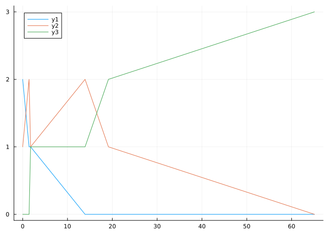

N = 3;
S0 = 2;
I0 = 1;
R0 = N-I0-S0;
tf = 100;
β = 0.1;
γ = 0.05 ;Untitled
The goal of this notebook is to derive the \(Q\) matrix (aka. Infinetestimal generator) from a CTMC model of an SIR disease process simulated using Gillespie’s algorithm.
To begin, lets define the model.
The SIR compartmental model features 3 compartiments (Susceptible, Infectious, and Recovered) though which N individuals progress (i.e. \(S + I + R = N\)). A single individual here can only move to the next compartiment (i.e. from S to I, or from I to R). Since \(R = S+I -N\), se can represent the state of the system with \(\{S, I\}\), where \(S \in \{0,1, ... , N-I-R\}\), \(I \in \{0,1, ... , N-S-R\}\).
for example, when N = 3, we can represent the system with a graph:
As a discrete time process this Markov chain can be represented by the transition matrix \[ p = \begin{bmatrix} \end{bmatrix} \]
In continuous time, siple transition probabilities are not sufficient to describe the process. We need the Transition rates which are related to the trasition probabilities \[p _ { i j } = \frac { q _ { i j } } { \sum _ { k } q _ { i k } } = \frac { q _ { i j } } { q _ { i } }\] —– Gillespie algorithm
Define event space (Susceptible -> infectious, Infectious -> Recovered) and the propensity function for each event \(p\_{inf} = \beta \times S \times I\) \(p\_{rec} = \gamma \times I\)
Determine the time until the next event (\(\tau\)) by sampling from an exponential distribution with parameter \(\frac{1}{\sum{p}}\)
Determine which event occurs at time \(t + \tau\) by weighting a random sample of \(x\sim unif(0,1)\) according top each event’s propensity and taking the large of the two.
Update time and state to be t + and ___
t = 0;
S = S0;
I = I0;
R = R0;
ta = [];
Sa = [];
Ia = [];
Ra = [];using Distributions
while t < tf
push!(ta, t)
push!(Sa, S)
push!(Ia, I)
push!(Ra, R)
pf1 = β*S*I
pf2 = γ*I
pf = pf1 + pf2
dt = rand(Exponential(1/pf))
t = t+dt
if t > tf
break
end
ru = rand()
if ru < (pf1/pf)
S = S-1
I = I +1
else
I = I-1
R = R+1
end
endusing DataFrames
results = DataFrame()
results[!, :time] = ta
results[!, :S] = Sa
results[!, :I] = Ia
results[!, :R] = Ra
return(results)6×4 DataFrame
| Row | time | S | I | R |
|---|---|---|---|---|
| Any | Any | Any | Any | |
| 1 | 0 | 2 | 1 | 0 |
| 2 | 1.42781 | 1 | 2 | 0 |
| 3 | 1.76355 | 1 | 1 | 1 |
| 4 | 13.92 | 0 | 2 | 1 |
| 5 | 19.1308 | 0 | 1 | 2 |
| 6 | 65.1015 | 0 | 0 | 3 |
using StatsPlots
@df results plot(:time, [ :S, :I, :R])